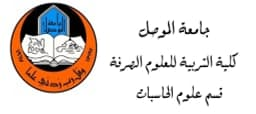
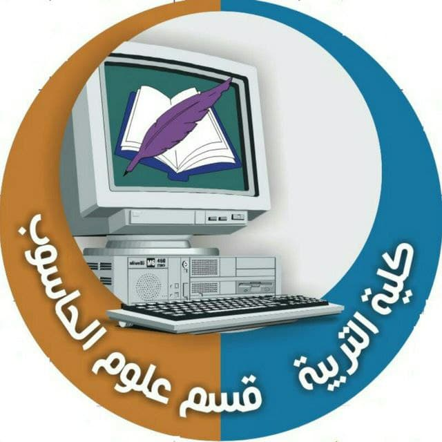

 
information about Computer Science Department
تأسس قسم علوم الحاسوب سنة 2003 وهو احد فروع كلية التربية للعلوم الصرفة في جامعة الموصل .
المناهج التي سوف يدرس الطالب في هذا القسم
المرحلة الاولى
/
المرحلة الثانية
/
المرحلةالثالثة
/
المرحلة الرابعة
Arkam waleed stage 4 gruop A